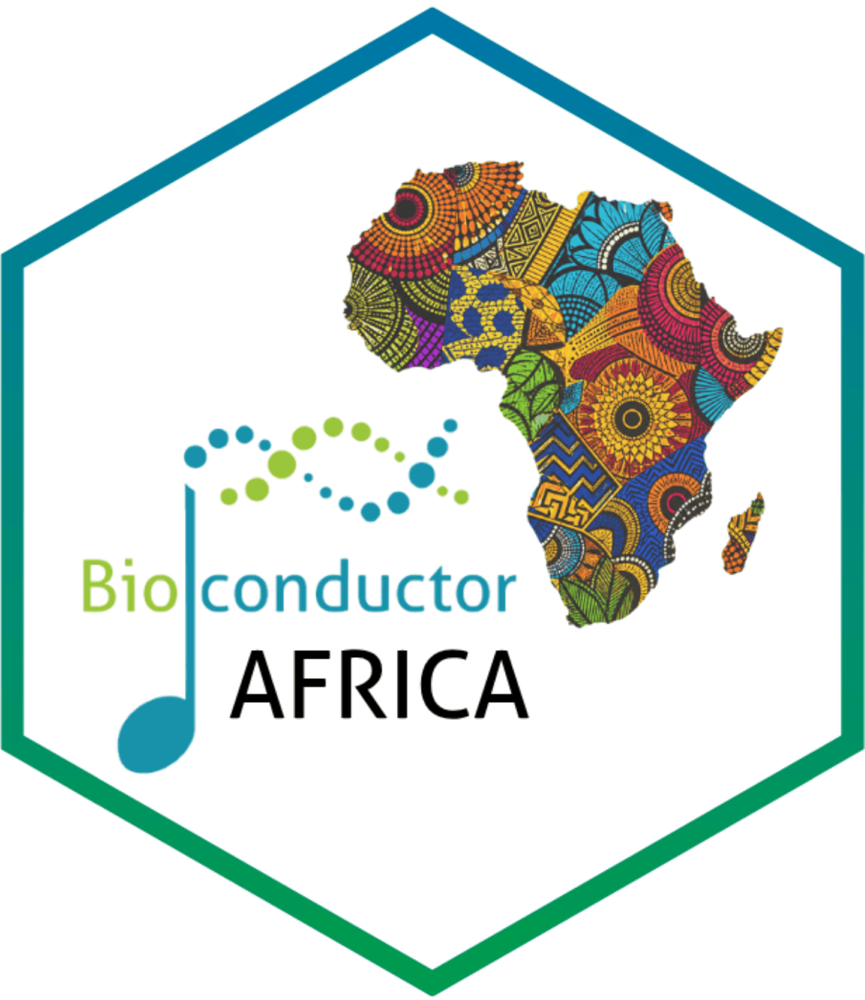
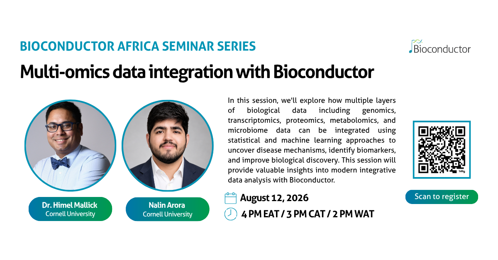

The Bioconductor Africa Seminar Series is an online seminar series highlighting the use of Bioconductor for biological data analysis, with a focus on topics relevant to researchers across Africa and beyond.
The series includes introductory and thematic sessions led by members of the Bioconductor community, and is open to anyone interested in Bioconductor and related workflows.
Series coordination: Laurah Nyasita Ondari (IITA, Kenya)


This session explores how Bioconductor supports multi-omics data integration.
Additional advanced training sessions (including topics such as single-cell RNAseq analysis) are being planned for later in 2026.
Sign up to receive seminar links, reminders, and announcements about future Bioc Africa activities.
Curious what the Bioconductor Africa seminars are like?
Recordings from previous sessions are available below.
If you’re new to Bioconductor, you may want to start with the introductory session.
A two-part series exploring GWAS data analysis with the GENESIS package.
In this second session, Stephanie focused on population structure, relatedness, and advanced association analyses in Bioconductor. Topics included computing genomic relationship matrices (GRMs), estimating relatedness with PC-Relate, fitting mixed-model null models, performing single-variant association tests, annotating and filtering variants, and conducting aggregate association tests.
Session notes: Gwas data analysis part 2
In this first session, Stephanie covered foundations of GWAS analysis in Bioconductor. Topics included the GDS data format, converting and exploring genomic datasets, and conducting association analyses through null models, single-variant tests, and sliding window tests.
Session notes: Gwas data analysis part 1
This session explored how Bioconductor supports CRISPR amplicon sequencing analysis using the ampliCan package. It covered practical workflows for analysing genome editing outcomes, generating automated reports, and estimating homology-directed repair (HDR).
Session notes: Crispr analysis with amplican notes
A three-part series exploring microbiome data analysis workflows in Bioconductor.
This session focuses on reproducible reporting and workflow integration for microbiome analysis using Bioconductor.
Session notes: OMA part 3 notes
This session demonstrates an end‑to‑end microbiome analysis workflow starting from abundance counts.
Session notes: OMA part 2 notes
This session introduces the microbiome analysis ecosystem and data containers.
Session notes: OMA part 1 notes
This introductory session provides an overview of the Bioconductor project and ways to get involved in the community.
Session notes: Introduction to Bioconductor notes
If you are interested in:
please get in touch via the Bioconductor Zulip #bioc_africa channel or by direct message.
The Bioconductor Africa Seminar Series is supported by the Bioconductor community and funded in part by the Chan Zuckerberg Initiative through the Essential Open Source Software for Science (EOSS) Cycle 6 programme.
This work forms part of Bioconductor’s broader efforts to expand global training, community engagement, and capacity building.
For more details on the funded projects, see: - Bioconductor projects funded by CZI EOSS Cycle 6
Bioc Africa activities are developed in collaboration with partners and contributors across the Bioconductor community and African research institutions.